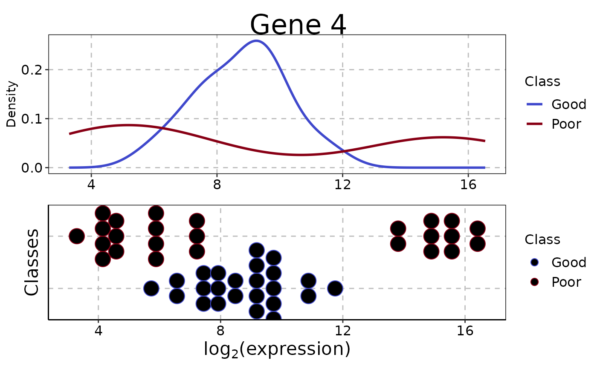

Plot Density, Scatterplot, Parallel Plot or Bar Chart for Features By Class
plotFeatureClasses.RdAllows the visualisation of measurements in the data set. If useFeatures
is of type Pairs, then a parallel plot is automatically drawn.
If it's a single categorical variable, then a bar chart is automatically
drawn.
Usage
# S4 method for matrix
plotFeatureClasses(measurements, ...)
# S4 method for DataFrame
plotFeatureClasses(
measurements,
classes,
useFeatures,
groupBy = NULL,
groupingName = NULL,
whichNumericFeaturePlots = c("both", "density", "stripchart"),
measurementLimits = NULL,
lineWidth = 1,
dotBinWidth = 1,
xAxisLabel = NULL,
yAxisLabels = c("Density", "Classes"),
showXtickLabels = TRUE,
showYtickLabels = TRUE,
xLabelPositions = "auto",
yLabelPositions = "auto",
fontSizes = c(24, 16, 12, 12, 12),
colours = c("#3F48CC", "#880015"),
showAssayName = TRUE,
plot = TRUE
)
# S4 method for MultiAssayExperiment
plotFeatureClasses(
measurements,
useFeatures,
classesColumn,
groupBy = NULL,
groupingName = NULL,
showAssayName = TRUE,
...
)Arguments
- measurements
A
matrix,DataFrameor aMultiAssayExperimentobject containing the data. For a matrix, the rows are for features and the columns are for samples. A column with name"class"must be present in theDataFramestored in thecolDataslot.- ...
Unused variables by the three top-level methods passed to the internal method which generates the plot(s).
- classes
Either a vector of class labels of class
factoror if the measurements are of classDataFramea character vector of length 1 containing the column name inmeasurementis also permitted. Not used ifmeasurementsis aMultiAssayExperimentobject.- useFeatures
If
measurementsis amatrixorDataFrame, then a vector of numeric or character indices or the feature identifiers corresponding to the feature(s) to be plotted. Ifmeasurementsis aMultiAssayExperiment, then aDataFrameof 2 columns must be specified. The first column contains the names of the assays and the second contains the names of the variables, thus each row unambiguously specifies a variable to be plotted.- groupBy
If
measurementsis aDataFrame, then a character vector of length 1, which contains the name of a categorical feature, may be specified. Ifmeasurementsis aMultiAssayExperiment, then a character vector of length 2, which contains the name of a data table as the first element and the name of a categorical feature as the second element, may be specified. Additionally, the value"clinical"may be used to refer to the column annotation stored in thecolDataslot of the of theMultiAssayExperimentobject. A density plot will have additional lines of different line types for each category. A strip chart plot will have a separate strip chart created for each category and the charts will be drawn in a single column on the graphics device. A parallel plot and bar chart plot will similarly be laid out.- groupingName
A label for the grouping variable to be used in plots.
- whichNumericFeaturePlots
If the feature is a single feature and has numeric measurements, this option specifies which types of plot(s) to draw. The default value is
"both", which draws a density plot and also a stip chart below the density plot. Other options are"density"for drawing only a density plot and"stripchart"for drawing only a strip chart.- measurementLimits
The minimum and maximum expression values to plot. Default:
NULL. By default, the limits are automatically computed from the data values.- lineWidth
Numeric value that alters the line thickness for density plots. Default: 1.
- dotBinWidth
Numeric value that alters the diameter of dots in the strip chart. Default: 1.
- xAxisLabel
The axis label for the plot's horizontal axis. Default:
NULL.- yAxisLabels
A character vector of length 1 or 2. If the feature's measurements are numeric an
whichNumericFeaturePlotshas the value"both", the first value is the y-axis label for the density plot and the second value is the y-axis label for the strip chart. Otherwise, if the feature's measurements are numeric and only one plot is drawn, then a character vector of length 1 specifies the y-axis label for that particular plot. Ignored if the feature's measurements are categorical.- showXtickLabels
Logical. Default:
TRUE. If set toFALSE, the x-axis labels are hidden.- showYtickLabels
Logical. Default:
TRUE. If set toFALSE, the y-axis labels are hidden.- xLabelPositions
Either
"auto"or a vector of values. The positions of labels on the x-axis. If"auto", the placement of labels is automatically calculated.- yLabelPositions
Either
"auto"or a vector of values. The positions of labels on the y-axis. If"auto", the placement of labels is automatically calculated.- fontSizes
A vector of length 5. The first number is the size of the title. The second number is the size of the axes titles. The third number is the size of the axes values. The fourth number is the size of the legends' titles. The fifth number is the font size of the legend labels.
- colours
The colours to plot data of each class in. The length of this vector must be as long as the distinct number of classes in the data set.
- showAssayName
Logical. Default:
TRUE. IfTRUEand the data is in aMultiAssayExperimentobject, the the name of the table in which the feature is stored in is added to the plot title.- plot
Logical. Default:
TRUE. IfTRUE, a plot is produced on the current graphics device.- classesColumn
If
measurementsTrainis aMultiAssayExperiment, the names of the class column in the table extracted bycolData(multiAssayExperiment)that contains each sample's outcome to use for prediction.
Value
Plots are created on the current graphics device and a list of plot
objects is invisibly returned. The classes of the plot object are determined
based on the type of data plotted and the number of plots per feature
generated. If the plotted variable is discrete or if the variable is numeric
and one plot type was specified, the list element is an object of class
ggplot. Otherwise, if the variable is numeric and both the density
and stripchart plot types were made, the list element is an object of class
TableGrob.
Settling lineWidth and dotBinWidth to the same value doesn't
result in the density plot and the strip chart having elements of the same
size. Some manual experimentation is required to get similarly sized plot
elements.
Examples
# First 25 samples and first 5 genes are mixtures of two normals. Last 25 samples are
# one normal.
genesMatrix <- sapply(1:15, function(geneColumn) c(rnorm(5, 5, 1)))
genesMatrix <- cbind(genesMatrix, sapply(1:10, function(geneColumn) c(rnorm(5, 15, 1))))
genesMatrix <- cbind(genesMatrix, sapply(1:25, function(geneColumn) c(rnorm(5, 9, 2))))
genesMatrix <- rbind(genesMatrix, sapply(1:50, function(geneColumn) rnorm(95, 9, 3)))
genesMatrix <- t(genesMatrix)
rownames(genesMatrix) <- paste("Sample", 1:50)
colnames(genesMatrix) <- paste("Gene", 1:100)
classes <- factor(rep(c("Poor", "Good"), each = 25), levels = c("Good", "Poor"))
plotFeatureClasses(genesMatrix, classes, useFeatures = "Gene 4",
xAxisLabel = bquote(log[2]*'(expression)'), dotBinWidth = 0.5)

infectionResults <- c(rep(c("No", "Yes"), c(20, 5)), rep(c("No", "Yes"), c(5, 20)))
genders <- factor(rep(c("Male", "Female"), each = 10, length.out = 50))
clinicalData <- DataFrame(Gender = genders, Sugar = runif(50, 4, 10),
Infection = factor(infectionResults, levels = c("No", "Yes")),
row.names = rownames(genesMatrix))
plotFeatureClasses(clinicalData, classes, useFeatures = "Infection")
plotFeatureClasses(clinicalData, classes, useFeatures = "Infection", groupBy = "Gender")
genesMatrix <- t(genesMatrix) # MultiAssayExperiment needs features in rows.
dataContainer <- MultiAssayExperiment(list(RNA = genesMatrix),
colData = cbind(clinicalData, class = classes))
targetFeatures <- DataFrame(assay = "RNA", feature = "Gene 50")
plotFeatureClasses(dataContainer, useFeatures = targetFeatures, classesColumn = "class",
groupBy = c("clinical", "Gender"), # Table name, feature name.
xAxisLabel = bquote(log[2]*'(expression)'), dotBinWidth = 0.5)